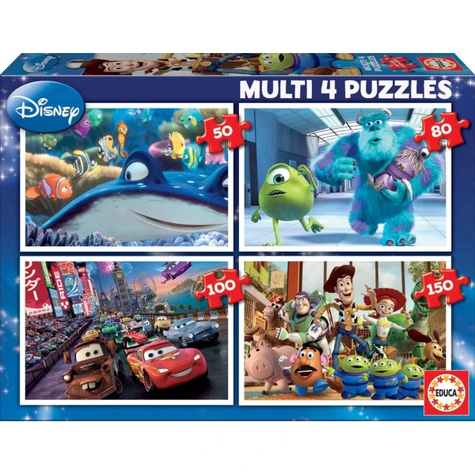

👶 5 años
Educa Puzzles Progresivos Disney Pixar
Un pack de 4 puzzles de dificultad creciente (50, 80, 100 y 150 piezas) con personajes de Cars, Toy Story, Monstruos Inc y Nemo. Pensado para ir avanzando paso a paso según se gana soltura.
⭐
¿Por qué nos gusta?
- ✔4 puzzles con dificultad progresiva.
- ✔Personajes muy populares de Disney Pixar.
- ✔Piezas grandes y seguras, fáciles de montar.
💬
Lo que más destacan las familias
Muchos padres coinciden en que el formato progresivo funciona muy bien para ir subiendo de nivel sin frustraciones. Los personajes de Pixar resultan un aliciente extra que motiva a completarlos todos.